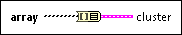

Array To Cluster Function
Owning Palette: Array VIs and Functions
Requires: Base Development System
Converts a 1D array to a cluster of elements of the same type as the array elements. Double-click the function to open the Cluster Size dialog box and set the number of elements in the cluster.
The default is nine. The maximum cluster size for this function is 256.
Use this function when you want to display elements of the same type in a front panel cluster indicator but want to manipulate the elements on the block diagram by their index values.

 Add to the block diagram Add to the block diagram |
 Find on the palette Find on the palette |